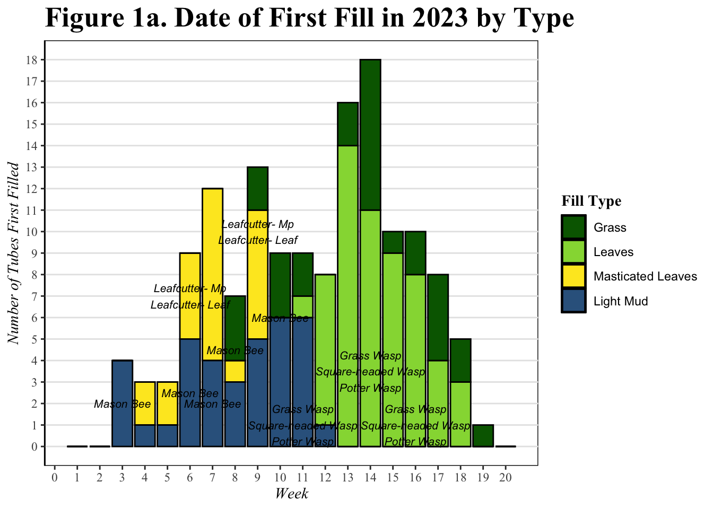
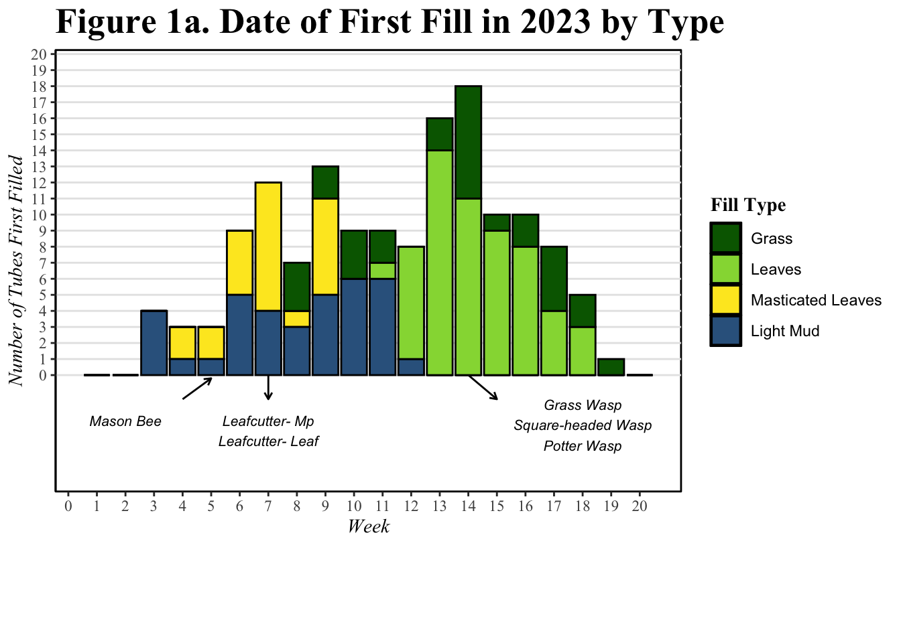
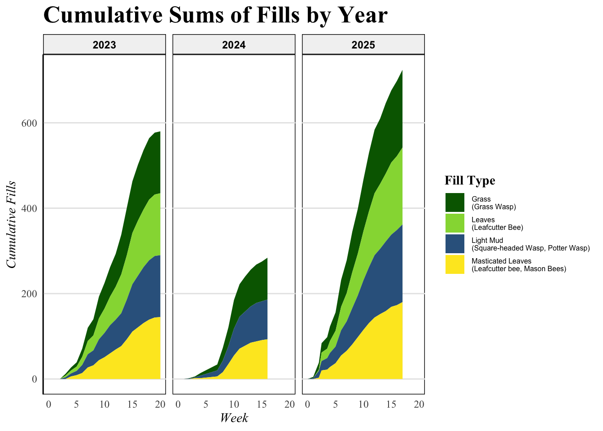
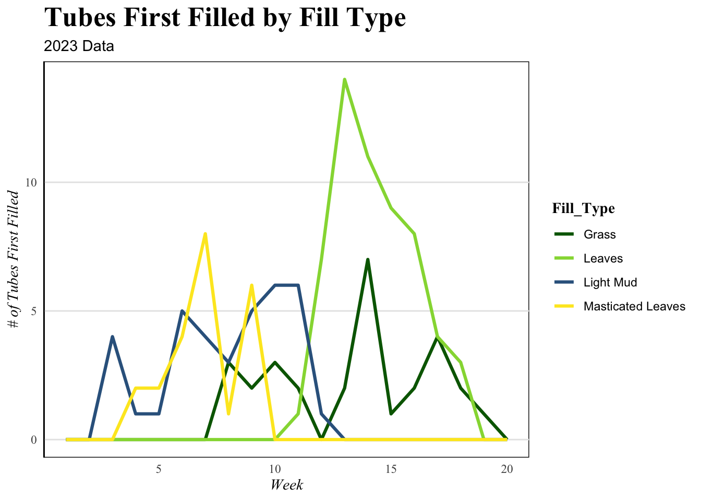
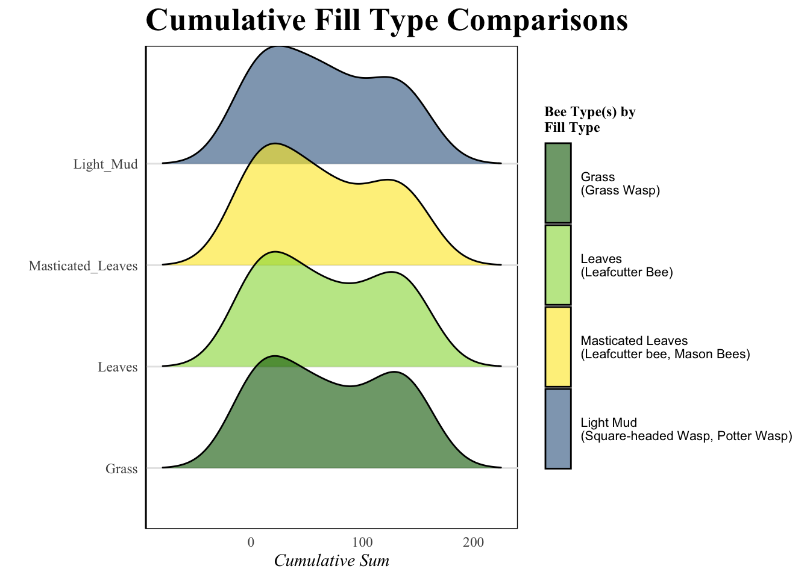

Total Fill Types Count
7
Date of First Fill in 2023 by Type
ggplot(fill_2023, aes(fill = Fill_Type,
y = Number_of_Tubes_First_Filled,
x = Week)) +
scale_fill_manual(values = my_colors, labels = my_labels) +
labs(
title = "Figure 1a. Date of First Fill in 2023 by Type",
x = "Week", y = "Number of Tubes First Filled",
fill = "Fill Type"
) +
geom_bar(position = "stack", stat = "identity", col = "black") +
# Dynamic labels from label_positions
geom_text(
data = label_positions,
aes(x = Week, y = ymid, label = Inhabitant),
inherit.aes = FALSE,
size = 2.8,
fontface = "italic",
color = "black",
fill = "white",# or "black" depending on fill darkness
check_overlap = TRUE # suppresses overlapping labels automatically
) +
scale_x_continuous(breaks = seq(0, 20, by = 1)) +
scale_y_continuous(breaks = seq(0, 27, by = 1)) +
mythemeWarning in geom_text(data = label_positions, aes(x = Week, y = ymid, label =
Inhabitant), : Ignoring unknown parameters: `fill`
Date of First Fill in 2023 by Type
ggplot(fill_2023, aes(fill = Fill_Type,
y = Number_of_Tubes_First_Filled,
x = Week)) +
scale_fill_manual(values = my_colors, labels = my_labels) +
labs(
title = "Figure 1a. Date of First Fill in 2023 by Type",
x = "Week", y = "Number of Tubes First Filled",
fill = "Fill Type"
) +
geom_bar(position = "stack", stat = "identity", col = "black") +
# --- Mason Bee (Light_Mud) --- angled arrow, shifted left
annotate("segment", x = 4, xend = 5, y = -1.5, yend = -0.2,
arrow = arrow(length = unit(0.15, "cm")), color = "black") +
annotate("text", x = 2, y = -2.5, label = "Mason Bee",
size = 2.8, fontface = "italic", hjust = 0.5, vjust = 1) +
# --- Leafcutter- Mp & Leafcutter- Leaf (Masticated_Leaves) ---
annotate("segment", x = 7, xend = 7, y = 0, yend = -1.5,
arrow = arrow(length = unit(0.15, "cm")), color = "black") +
annotate("text", x = 7, y = -2.5, label = "Leafcutter- Mp\nLeafcutter- Leaf",
size = 2.8, fontface = "italic", hjust = 0.5, vjust = 1) +
# --- Grass Wasp, Square-headed, Potter (Grass, dark green) ---
annotate("segment", x = 14, xend = 15, y = 0, yend = -1.5,
arrow = arrow(length = unit(0.15, "cm")), color = "black") +
annotate("text", x = 18, y = -1.5,
label = "Grass Wasp\nSquare-headed Wasp\nPotter Wasp",
size = 2.8, fontface = "italic", hjust = 0.5, vjust = 1) +
scale_x_continuous(breaks = seq(0, 20, by = 1)) +
scale_y_continuous(breaks = seq(0, 27, by = 1)) +
coord_cartesian(ylim = c(-6, 19), clip = "off") +
mytheme +
theme(plot.margin = margin(t = 5, r = 5, b = 60, l = 5, unit = "pt"))
Total Fill Types Count
7
Cumulative Fills by Year
ggplot(full_cum_clean,
aes(x = Week,
y = cum_sum,
fill = Fill_Type)) +
geom_area() +
facet_wrap(~year) +
labs(
y = "Cumulative Fills",
title = "Cumulative Sums of Fills by Year",
fill = "Fill Type"
) +
scale_fill_manual(values = my_colors, labels = bee_fill_comp) +
theme_minimal() +
mytheme +
theme(
legend.text = element_text(size = 6)
)
Tubes First Filled by Fill Type
`2023_bee tube first fill data_no WF` %>%
filter(`2023_bee tube first fill data_no WF`$Fill_Type != "NA") %>%
ggplot(aes(x = Week, y = Number_of_Tubes_First_Filled, color = Fill_Type)) +
geom_line(size = 1.1) +
scale_color_manual(values = my_colors, labels = my_labels) +
labs(
y = "# of Tubes First Filled",
title = "Tubes First Filled by Fill Type",
subtitle = "2023 Data"
) +
theme_minimal() +
mytheme +
theme(
legend.position = "right",
panel.grid.minor = element_blank()
)
Heat Map
ID_freq_comp %>%
filter(Fill_Type != "Empty") %>%
ggplot(aes(x = Fill_Type, y = Location, fill = Proportion_of_Fill)) +
geom_tile(color = "white") +
scale_fill_gradient2(
low = "white",
high = "darkgreen",
breaks = c(0,.1,.2,.3)
) +
scale_x_discrete(labels = c("Light_Mud" = "Light Mud",
"Masticated_Leaves" = "Masticated Leaves",
"Intact_Leaves" = "Intact Leaves"))+
labs(
title = "Fill Type Distribution by Location",
x = "Fill Type",
y = "Location",
fill = "Proportion"
) +
theme_minimal() +
mytheme +
theme(
axis.text.x = element_text(angle = 30, hjust = 1)
)
Fill Comparisons
fill_2023_cum %>%
ggplot(aes(x = cum_sum, y = Fill_Type, fill = Fill_Type)) +
geom_density_ridges(alpha = 0.6, scale = 1.2, show.legend = T) +
labs(
x = "Cumulative Sum",
y = "",
title = "Cumulative Fill Type Comparisons",
fill = "Bee Type(s) by \nFill Type"
) +
scale_fill_manual(values = my_colors, labels = bee_fill_comp) +
theme_minimal() +
mytheme +
theme(
legend.text = element_text(size = 8, lineheight = 0.85),
legend.key.height = unit(1.8, "cm"), # give each key enough vertical room
legend.title = element_text(size = 9, face = "bold")
)Picking joint bandwidth of 26.5